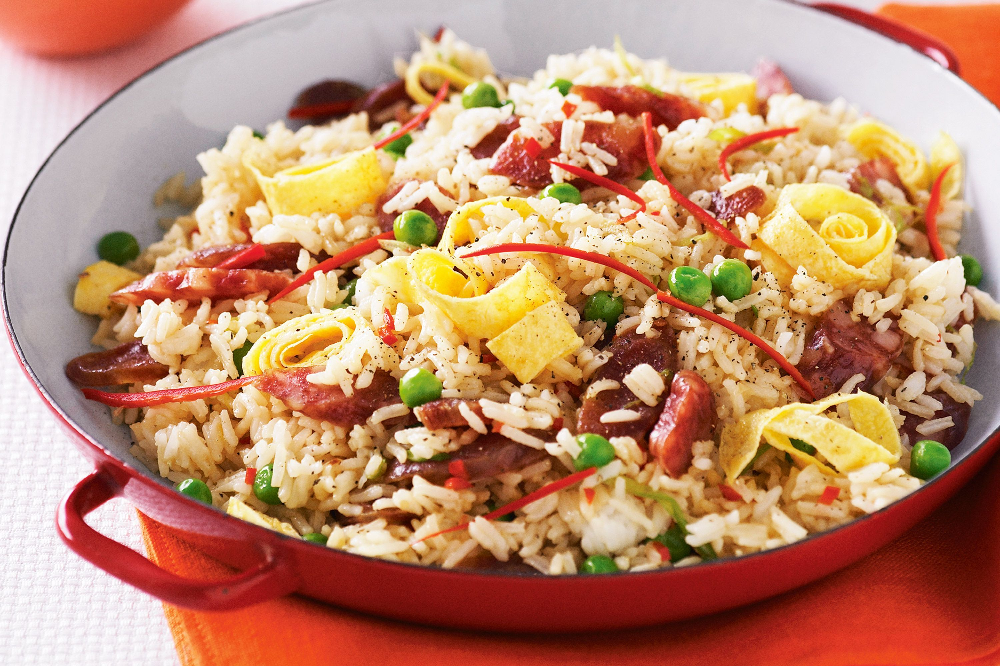

Chinese Fried Rice Recipe

How to Make Chinese Fried Rice
This chicken fried rice recipe tastes just like what they serve in restaurants. A stir-fry with chicken, rice, soy sauce, and veggies like peas, carrots, celery, and bell peppers. My sister just sort of whipped this up one day, and it's very good!
Ingredients
- Sesame Oil
- Onions
- Chicken
- Soy Sauce
- Carrots
- Celery
- Red bell pepper
- Fresh pea pods
Step-By-Step
- Heat sesame oil in a large skillet over medium heat. Add onion and sauté until soft. Add cooked chicken and 2 tablespoons soy sauce; stir-fry for 5 to 6 minutes.
- Stir in carrots, celery, red bell pepper, pea pods, and green bell pepper; stir-fry for 5 minutes. Mix in cooked rice until thoroughly combined.
- Stir in scrambled eggs and 1/3 cup soy sauce; cook until heated through and serve hot.